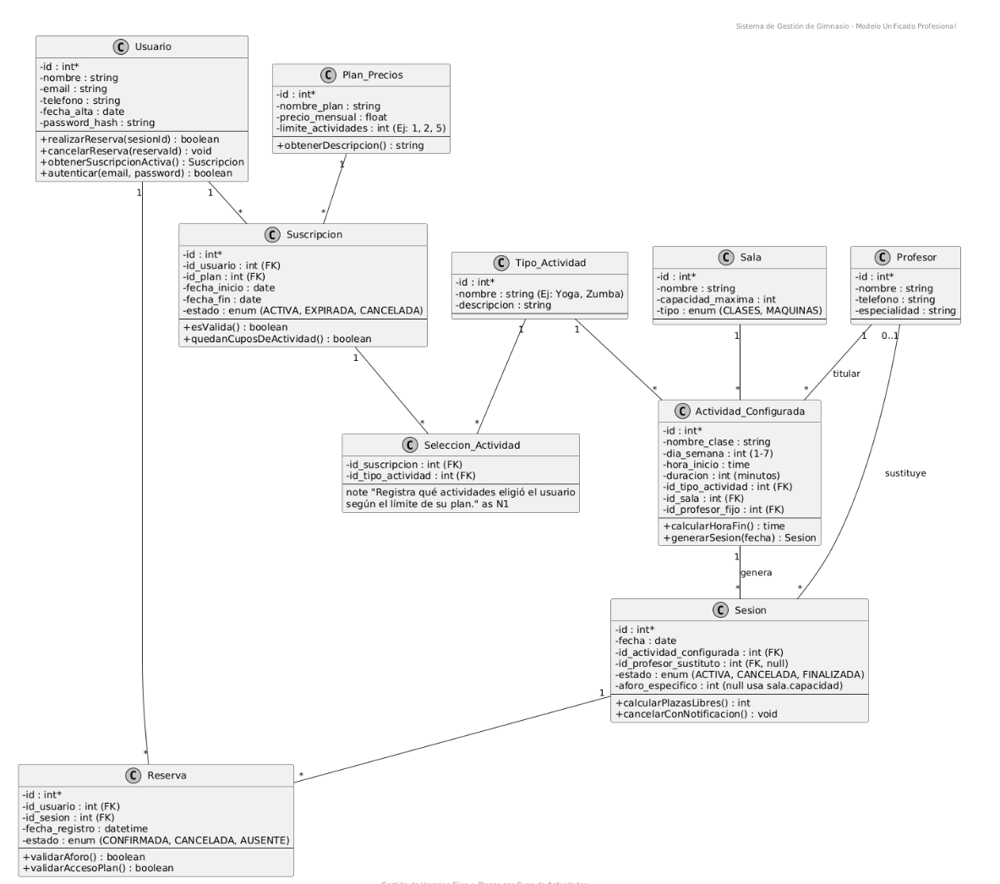

Resumen del proyecto WIP
El objetivo principal del proyecto es desarrollar una aplicación completa que combine interfaz, lógica de negocio y base de datos, aplicando los conocimientos de 2º DAM. Buscamos trabajar como un equipo real usando herramientas como GitHub, Kotlin y PostgreSQL, y entregar una solución funcional y bien documentada que demuestre nuestras competencias como desarrolladores.
Nombre del proyecto
Proyecto Intermodular 2º DAM
Objetivos del proyecto
- Analizar y definir los requisitos funcionales y técnicos del proyecto.
- Diseñar la estructura de la base de datos en PostgreSQL con integridad referencial.
- Implementar la lógica de negocio en Java con código modular y mantenible.
- Desarrollar una interfaz gráfica clara, funcional y adaptada al usuario.
- Gestionar la base de datos con DBeaver y validar consultas durante el desarrollo.
- Utilizar Git y GitHub para el control de versiones y trabajo colaborativo.
- Planificar el proyecto mediante fases visibles en bitácora, cronograma y roadmap.
- Realizar pruebas funcionales y corregir errores detectados.
- Elaborar toda la documentación técnica y de usuario requerida en el módulo.
- Fomentar la organización y trabajo en equipo dentro del grupo SyntaxTerror.
Fases principales
-
Fase 1 – Análisis y planificaciónDefinir requisitos, esquemas, tecnologías y planificación inicial.
-
Fase 2 – DiseñoDiseño de BD, arquitectura, interfaces, navegación...
-
Fase 3 – DesarrolloImplementación de funcionalidades, pruebas y correcciones.
-
Fase 4 – Documentación y entregaManuales, memoria técnica, preparación de la presentación final.
Panel de tareas
| Tarea | Estado | Prioridad |
|---|---|---|
| Definir alcance del proyecto | ✅ Completado | Alta |
| Configurar repositorio en GitHub | ✅ Completado | Media |
| Crear estructura inicial de la app | ⏳ En progreso | Alta |
| Escribir documentación mínima | 🕒 Pendiente | Media |
Etiquetas recomendadas
Cronograma de trabajo
Cronograma orientativo por semanas.
| Semana | Actividad | Estado |
|---|---|---|
| 1 | Análisis, definición del alcance y creación del repositorio. | ✅ Completado |
| 2 | Diseño de BD (PostgreSQL) y conexión con DBeaver. | ⏳ En progreso |
| 3 | Desarrollo de la lógica principal de la aplicación. | 🕒 Pendiente |
| 4 | Pruebas, correcciones y documentación final. | 🕒 Pendiente |
Documentación del proyecto actualizado
Resumen vivo de lo que llevamos preparado hasta hoy: alcance, viabilidad, roles, requisitos y riesgos. Esta sección se mantiene alineada con lo que estamos entregando en GitHub (bitácora + materiales).
1) Alcance (MVP) y visión
Desarrollar una solución tecnológica completa (app de escritorio + app Android) para la gestión y reserva de espacios/recursos (salas, equipos, parkings). Empezamos por un MVP centrado en un gimnasio para después escalar si hay tiempo.
2) Tecnologías y herramientas
- GitHub: repositorio, control de versiones, trabajo colaborativo y publicación web (GitHub Pages).
- IDE: IntelliJ IDEA / Android Studio (según módulo y necesidades).
- Backend: Java (API/servicios) + JSON.
- Frontend escritorio: JavaFX.
- App móvil: Android (Kotlin).
- BBDD: PostgreSQL (modelado y consultas con DBeaver).
3) Organización del equipo (roles)
| Rol | Responsabilidad | En GitHub |
|---|---|---|
| Project Manager | Coordina el equipo, prioridades y bloqueos. | Hitos, issues, planificación |
| Secretaría | Documentación formal y actualización de la web/bitácora. | Docs / HTML / Wiki |
| Frontend | UI/UX (JavaFX + Android), navegación y pantallas. | Ramas de UI + PRs |
| Backend | Modelo de datos, lógica, endpoints/servicios. | Ramas backend + PRs |
| QA | Pruebas funcionales/no funcionales, reporte de bugs. | Issues tipo bug |
| DevOps | Flujo de ramas, despliegues, revisiones de PRs. | Supervisión de merges |
4) Requisitos (resumen)
- Usuarios: registro, login seguro, roles (admin/monitor/cliente), recuperación de contraseña.
- Reservas: consultar disponibilidad, reservar/modificar/cancelar, control de aforo.
- Clases/actividades: crear clases, horarios, monitor, plazas disponibles.
- Atómico: evitar solapamientos/duplicidades (anti-overbooking).
- No funcionales: rendimiento, disponibilidad, seguridad (RGPD), mantenibilidad (Git).
5) Riesgos (los que vigilamos)
- Complejidad del backend (reserva atómica / overbooking en tiempo real).
- Tiempo de entrega y coordinación de tareas.
- Caída/limitaciones del servidor cloud (si lo usamos).
- Seguridad y cumplimiento RGPD (datos personales + autenticación).
6) DAFO (resumen)
| Debilidades | Amenazas |
|---|---|
| Curva de aprendizaje, pruebas y documentación. | Limitación de tiempo, cambios de versiones. |
| Fortalezas | Oportunidades |
|---|---|
| Tecnologías maduras, arquitectura API+BBDD escalable, documentación abundante. | Demanda de soluciones self-service, mercado en crecimiento para gestión de recursos. |
Fuente interna: recopilación y viabilidad técnica del proyecto (documento del equipo).
Cronograma y planificación
Vista global de las fases (Inicio → Planificación → Análisis/Diseño → Desarrollo → Pruebas → Despliegue → Cierre).
Cronograma (Gantt)
Imagen del cronograma (Gantt) tomada como referencia visual y guardada dentro del repositorio para que GitHub Pages la cargue siempre.

Detalle (últimos avances hasta 21/02/2026)
El diagrama de Gantt anterior marca las fases grandes del proyecto. Para que la bitácora sea más realista y “de equipo”, añadimos un desglose de los ajustes y entregables que se han ido cerrando en los últimos días (hasta hoy). Estas fechas recogen trabajo de integración, documentación y pulido (UI/UX), que normalmente no se ve en un Gantt “macro”.
| Fecha | Qué se hizo | Estado |
|---|---|---|
| 16/02/2026 | Revisión del flujo de pantallas (login/registro) y comprobación de navegación. Ajustes de toolbar y botones para que el usuario no se pierda. | Hecho |
| 17/02/2026 | Sincronización del repositorio y estructura de carpetas. Revisión de recursos (nombres válidos en res/) para evitar errores de compilación. |
Hecho |
| 18/02/2026 | Documentación visual: recopilación de logos, perfiles e imágenes del proyecto para usar en la web y en el PDF. Limpieza de assets duplicados. | Hecho |
| 19/02/2026 | Base de datos: revisión del modelo y diagrama ER (tablas principales, relaciones, estados). Preparación de scripts de creación y ejemplos. | Hecho |
| 20/02/2026 | Web (GitHub Pages): mejoras de estructura, secciones y presentación. Ajustes para que las imágenes se carguen desde rutas del repositorio. | Hecho |
| 21/02/2026 | Hoy: pulido final de UI/UX (modo claro, consistencia de colores, tipografías) y actualización de la documentación en HTML con lo trabajado hasta la fecha. | En curso |
Nota: este detalle no sustituye al Gantt, lo complementa. El Gantt responde a “fases grandes”, y este bloque responde a “qué hicimos realmente cada día”.
UX / Diseño centrado en el usuario (HCD)
Checklist de cómo estamos enfocando el diseño para que la app sea usable (no solo “bonita”).
-
Paso 01 — Definir la utilidadQué problema resuelve la app y qué necesidad real cubre (en palabras simples).
-
Paso 02 — Conocer al usuarioPersonas / perfiles: objetivos, motivaciones, experiencia tecnológica, contexto.
-
Paso 03 — IdeaciónBrainstorming → debate → priorización (imprescindible / importante / opcional).
-
Paso 04 — PrototiposWireframes y prototipos (ej. Figma) para validar flujo antes de programar.
-
Paso 05 — TestsPruebas con usuarios: conclusiones y mejora iterativa (ciclo continuo).
Wireframe (referencia)
Primer wireframe/imagen de referencia enlazada en el documento del equipo.
Detalle (últimos avances hasta 21/02/2026)
El diagrama de Gantt anterior marca las fases grandes del proyecto. Para que la bitácora sea más realista y “de equipo”, añadimos un desglose de los ajustes y entregables que se han ido cerrando en los últimos días (hasta hoy). Estas fechas recogen trabajo de integración, documentación y pulido (UI/UX), que normalmente no se ve en un Gantt “macro”.
| Fecha | Qué se hizo | Estado |
|---|---|---|
| 16/02/2026 | Revisión del flujo de pantallas (login/registro) y comprobación de navegación. Ajustes de toolbar y botones para que el usuario no se pierda. | Hecho |
| 17/02/2026 | Sincronización del repositorio y estructura de carpetas. Revisión de recursos (nombres válidos en res/) para evitar errores de compilación. |
Hecho |
| 18/02/2026 | Documentación visual: recopilación de logos, perfiles e imágenes del proyecto para usar en la web y en el PDF. Limpieza de assets duplicados. | Hecho |
| 19/02/2026 | Base de datos: revisión del modelo y diagrama ER (tablas principales, relaciones, estados). Preparación de scripts de creación y ejemplos. | Hecho |
| 20/02/2026 | Web (GitHub Pages): mejoras de estructura, secciones y presentación. Ajustes para que las imágenes se carguen desde rutas del repositorio. | Hecho |
| 21/02/2026 | Hoy: pulido final de UI/UX (modo claro, consistencia de colores, tipografías) y actualización de la documentación en HTML con lo trabajado hasta la fecha. | En curso |
Nota: este detalle no sustituye al Gantt, lo complementa. El Gantt responde a “fases grandes”, y este bloque responde a “qué hicimos realmente cada día”.
Diseño visual: paleta, tipografías y criterios
En esta fase hemos fijado una identidad visual coherente para que tanto la web (GitHub Pages) como la app PixelGym se sientan parte del mismo proyecto. Nos centramos en consistencia (mismos acentos, mismos contrastes) y en que sea legible. Última actualización: 21/02/2026
Paleta principal (Web / SyntaxTerror)
Para la web elegimos una base oscura (azules/grises) y un accent naranja para botones y enlaces, porque encaja con el carácter del proyecto y mantiene el “look” tecnológico. Importante: evitamos dejar colores “por defecto” (como los colores por defecto de plantilla) para que todo tenga identidad propia.
#0F172A · base oscura (contraste alto)
#111827 · capas y contenedores
#FF7A00 · botones, badges, enlaces
#E5E7EB · legibilidad
Paleta secundaria (App PixelGym)
Se mantiene el naranja PXG como marca (botones, switches, highlights). Para modo claro usamos un blanco suave para no “quemar” la vista.
#FF7A00 · principal
#F4F4F6 · modo claro
#1E1E1E · modo claro
#DADADA · switches off
Tipografía
Para la app se ha añadido una fuente personalizada en res/font (ej: fredoka_one.ttf) y se aplica con
android:fontFamily="@font/fredoka_one". Importante: nombres de archivo en minúsculas y con _.
Checklist de consistencia visual (UI)
- Un solo color de acción (accent): naranja en web y en app (misma identidad).
- Jerarquía: títulos grandes, subtítulos medianos, texto de apoyo en gris.
- Espaciado: márgenes constantes (8/16/24).
- Iconos: mismos estilos en todas las pantallas (Material Icons).
- Accesibilidad: contraste mínimo y tamaños de fuente legibles.
Wireframes (frames) y ajustes de layout
Hemos trabajado los frames (wireframes) para asegurar que la navegación sea lógica antes de “pintar” toda la UI final. Aquí documentamos la decisión y el arreglo de distribución (alineación, tamaños y coherencia entre pantallas).
Qué se ha arreglado
- Orden y jerarquía visual: logo → marca (PXG) → formulario → acciones.
- Botones con tamaños coherentes y separación suficiente (evitar “apretar” elementos).
- Uso correcto de Toolbar / flecha atrás según si es pantalla raíz o secundaria.
- Modo claro/oscuro: mismos componentes, cambian colores (no cambia la estructura).
Wireframe / notas de usuario (documento)
Documento interno del equipo con el frame del usuario: Documentacion/WireframeUsuario.md
(en GitHub Pages lo mantenemos como referencia).

Base de datos (BBDD): modelo, scripts y diagrama
Diseño de la base de datos para el módulo gym (usuarios, suscripciones, planes, salas, profesores, sesiones y reservas). Se adjunta el diagrama ER y scripts SQL.
Diagrama Entidad-Relación (ER)
Imagen guardada dentro del repo para que se vea en GitHub

Scripts SQL (tablas + datos de ejemplo)
Ubicación recomendada en el repo:
BBDD/script_tablas.sql y BBDD/script_datos_ejemplo.sql.
Evidencias y entregables (hasta hoy)
Recopilación rápida de lo que ya está hecho y documentado para poder defender el proyecto y preparar el PDF final.
✅ Hecho
- Estructura del repositorio + GitHub Pages activa.
- Bitácora, roadmap y notas rápidas en la web.
- UX/HCD documentado (pasos y criterios).
- Paleta de colores definida (web + app).
- Wireframes/frames y ajustes de layout.
- Cronograma Gantt incrustado.
- Modelo de BBDD y diagrama ER.
📌 Próximos pasos
- Conectar la app con autenticación (email/contraseña) y persistencia.
- Implementar pantallas finales siguiendo el frame.
- Pruebas (unitarias + integración) y checklist de navegación.
- Preparar entrega final (PDF + capturas + demo).
Bitácora del proyecto
Añadimos una sesión al día o evento de trabajo.
-
2025-12-23 Diseño BDDiseño ER y UML de la base de datos (salas, clases, horarios y reservas)- Se ha elaborado el Diagrama Entidad-Relación (ER) para definir entidades, atributos y relaciones.
- Se ha construido el modelo UML para representar las clases/tablas y sus asociaciones.
- Objetivo: dejar clara la estructura antes de pasar a PostgreSQL y asegurar integridad (claves y relaciones).
Diagrama ER:

Diagrama UML:

Explicación breve:
El funcionamiento de la aplicación es sencillo e intuitivo. Primero, el usuario debe registrarse o iniciar sesión en la plataforma. Una vez autenticado, puede visualizar las salas disponibles y seleccionar la que desea utilizar. Después, elige el día y la hora disponibles y realiza su reserva. Cada reserva queda asociada al usuario, a la sala seleccionada y al horario elegido. Además, el sistema controla el aforo máximo de cada sala para evitar que se superen las plazas disponibles en una misma franja horaria. -
2025-11-14 Configuración inicialCreación de repositorio y página de bitácora- Hemos creado el repositorio en GitHub y hemos subido esta página de bitácora.
- Hemos definido las secciones básicas: resumen, bitácora, tareas y notas rápidas.
- Hemos revisado que GitHub Pages funcione correctamente. -
2025-11-15 Conexión BD en la nubeConectar base de datos- Investigación sobre opciones de nube para la base de datos.
- Decidimos usar PostgreSQL gestionada y conectarla con DBeaver.
- Añadimos la base de datos al proyecto y probamos la conexión desde el cliente SQL.
- Dejamos preparado el acceso para colaboradores.
Roadmap del proyecto
Notas rápidas
-
[Idea] Mejorar el diseño de la interfazProbar una paleta más clara y añadir iconos pequeños para las acciones principales.
-
[Duda] Integración con base de datosHemos configurado la base de datos en PostgreSQL y la gestionamos mediante DBeaver. Hoy hemos creado el esquema inicial, conectado el cliente SQL y comenzado a definir tablas y relaciones.
-
[Recordatorio] Revisar rúbrica del profesorComprobar que la entrega cumple todos los puntos de RA y criterios de evaluación.
Quiénes somos
Somos el equipo SyntaxTerror, responsables del desarrollo del proyecto intermodular de 2º DAM. Nuestro objetivo es aplicar las competencias del ciclo para crear una solución útil, organizada y bien documentada.
-
Pedro TorresDesarrollador · Coordinación técnica · Gestión del proyecto · Control de versiones · Documentación
-
Manuel SánchezDesarrollador · Coordinación técnica · Gestión del proyecto · Control de versiones · Documentación
-
Adrián RomeraDesarrollador · Coordinación técnica · Gestión del proyecto · Control de versiones · Documentación